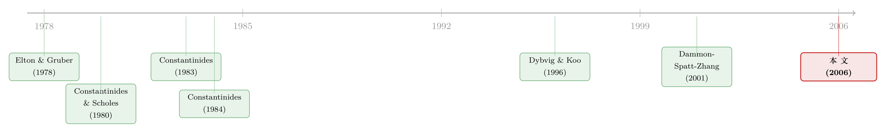

为什么有时该「凭空」做空一只股票？——把税收写进多资产的投资账本
本文读的是 Gallmeyer, Kaniel & Tompaidis (2006, Journal of Financial Economics)：在两只风险股票、可以付费做空但不许「做空到箱」(shorting the box) 的世界里，作者用一个生命周期的消费-投资模型发现了一种全新的交易策略——为了压低未来因税收而被迫调仓的成本，投资者会在组合根本没有任何浮盈时就主动做空其中一只股票。换句话说，做空不再只是「我赚多了想落袋又不想交税」的事后动作，而成了一种事前买下「调仓自由度」的保险。
1 一个让人别扭的问题
先讲一个几乎所有教科书都会回避的尴尬。
理论上，没有税、没有摩擦，分散投资 (diversification) 是免费的午餐：你应该持有一个权重最优的市场组合，仅此而已。这就是著名的共同基金定理 (mutual fund theorem)——无论市场上有多少只风险资产，你只需要一只指数基金加上货币市场账户。
可现实里有税。一旦卖出一只有浮盈的股票，你就要为这笔已实现资本利得 (realized capital gain) 缴税。于是「再平衡」这件听上去稀松平常的事，突然变得很贵：你想把组合调回最优权重，但每动一次手，税务局就来抽一刀。
那么，一个自然的问题是：当分散投资的好处，要用「未来一次次交税式调仓」的代价去换，投资者到底该怎么办？
这正是本文要回答的问题。而它给出的答案，会让你重新理解「做空」这个动作的含义。
2 故事的前半段：Constantinides 的「优雅分离」，以及它为什么塌了
要讲清楚这篇论文的贡献，得先回到这条文献的源头。
在 Constantinides (1983) 那篇开山之作里，资本利得税的世界其实异常优雅。他证明了一个分离结果 (separation result)：在只有税这一个摩擦的前提下，投资者的最优策略是——所有浮盈一律递延、所有浮亏立刻实现，而且这套税收操作完全不影响他的消费决策。投资和消费，干净地分开了。
这套优雅是怎么做到的？靠的就是「做空到箱」(shorting the box)。
想象你重仓了一只浮盈巨大的股票，现在想减仓。直接卖？要交税。于是你不卖，而是借同一只股票做一笔等量的空头——多空相抵，你的净敞口降下来了，但原来那笔多头一股没动，浮盈一分钱的税都没实现。你既完成了再平衡，又把税递延了下去。再配合美国税法那条「人死后成本基准 (tax basis) 重置为市价、资本利得税一笔勾销」的遗产条款，理论上你可以终其一生都不为资本利得交税。
这就是为什么「分离结果」成立：做空到箱给了投资者一条不触发税负就能任意调仓的暗道，税收因此不再扭曲他的实物决策。
但 1997 年的《纳税人减负法案》(Taxpayer Relief Act) 把这条暗道堵死了：针对同一只证券的做空到箱，被重新定性为「卖出原有头寸」，照样按资本利得课税。优雅的分离结果，地基被抽掉了。
于是文献的后半段登场。Dammon, Spatt & Zhang (2001b) 接过接力棒，研究一个禁止卖空、只有单只股票的投资者：既然你不能无税调仓，最优策略就被你当前的持仓结构「绑架」了——这和带交易成本的组合问题神似，股票与货币账户之间的最优配比，会因为「调仓要交税」这件事而偏离无税基准。基准资产里嵌入的浮盈越大，你越不舍得卖，组合就越被「锁死」。
但 Dammon et al. (2001b) 有一个绕不开的局限：只有一只股票。只要资产是一只，「分散」就无从谈起，「在股票之间挪腾来管理税负」也无从谈起。而真实世界里，恰恰是多只高度相关的资产之间的取舍，才让税收管理变得有意思。
3 把舞台搭起来：两只股票、可以做空、但不许做空到箱
本文做的，就是把舞台从「一只股票、不许做空」扩到「两只股票、可以付费做空、但不许做空到箱」。
为什么是两只而不是更多？作者坦白：为了可解 (tractability)。但他们论证说，两只股票已经足以刻画核心的张力——既包括「股票 vs 货币账户」之间的分散，也包括「股票内部」的分散——而主要结论应当能推广到更多资产。
这个设定背后有一个很具体的现实图景：一个原本只买「一只大盘指数基金 + 货币账户」的投资者，现在考虑换成「两只各占一半、合起来等于该指数的 ETF + 货币账户」。近年大量交易所交易基金 (exchange-traded funds, ETF) 的出现让这种切换变得轻而易举——而且 ETF 大多可融券做空、不受上涨吊限 (uptick rule) 约束，做空市场相当活跃（文中举例：QQQ 在 2002 年的平均融券余额达到流通股的 27%）。
关键在于：做空被允许了，但「做空到箱」仍被禁止。 你可以借券卖空一只股票，却不能对你已经持有的同一只股票做对冲式的空头去逃税。正是这条「半开半闭」的门，逼出了后面那些精巧的策略。
4 模型：一个被税收基准「记忆」缠住的贝尔曼方程
这是一篇模型论文，核心是一个离散时间、生命周期的消费-投资动态规划问题。我们一步步把它讲清楚。
资产与价格。 经济里有三种资产：一个连续复利、税前利率为 \(r_f\) 的货币市场账户，和两只支付红利的风险股票。两只股票的除息价格各自服从二项马尔可夫链 (binomial Markov chain)，相关系数为常数 \(\rho\)。
一个常被忽略却很要紧的细节——波动率的标定。 作者希望在改变相关系数 \(\rho\) 时，让等权风险组合的税前夏普比率 (Sharpe ratio) 保持不变。为此，他把每只单个股票的波动率设为
$$ s_i = \frac{s}{\sqrt{0.5\,(1+\rho)}}. $$
这一步的直觉是：两只波动率都为 \(s_i\)、相关系数为 \(\rho\) 的股票，等权组合的方差是 \(0.5\,s_i^2(1+\rho)\)。要让组合波动率恒等于基准 \(s\)，就必须让单股波动率随 \(\rho\) 上升而下降。否则你在比较「高相关」和「低相关」两个世界时，其实偷偷改变了组合的总风险，结论就不干净了。
税收。 红利和利息按普通所得税率 \(t_D\) 在支付当期征收；已实现资本利得/损失按资本利得税率 \(t_C\) 征收，且假设亏损可全额、即时抵扣。成本基准用加权平均购买价 (weighted-average purchase price) 计算——不是按「指定某一批股份卖出」的精确识别法，因为后者会让多期问题在数值上不可解。作者引 DeMiguel & Uppal (2003) 的结果替这个简化背书：十年期里，用加权平均法相对精确识别法的确定性等价财富损失不到 0.5%。死亡时，资本利得税豁免、两只股票的成本基准重置为当时市价（红利税和利息税照付）。
那个「记忆」从哪来。 注意：每一只股票的税收基准本身是一个状态变量，它随交易历史演化——增持时按股数加权平均更新、发生亏损时（洗售被允许）重置为现价、头寸变号时按「先平掉旧头寸」处理（因为做空到箱被禁）。正是这些基准，让今天的最优决策死死依赖于过去，问题因此远比无税情形复杂。
目标与求解。 投资者用常相对风险厌恶 (constant relative risk aversion, CRRA) 偏好，相对风险厌恶系数为 \(\gamma\)，对一生的实际消费和身后遗赠求贴现期望效用的最大化。用动态规划原理，最优问题写成一个贝尔曼方程，从终期 \(T\) 出发逆向归纳 (backward induction) 数值求解。
把这个递归关系的骨架标注出来：
这里 \(W_t\) 是财富、\(B_t\) 是两只股票的税收基准向量、\(\theta_t\) 是交易策略、\(\lambda_t\) 是当期存活概率（按 1990 年美国生命表标定，\(t=0\) 对应 20 岁，\(t=T=80\) 对应 100 岁强制退出）。这个方程之所以「难」，全在那个被 \(B_t\) 缠住的状态空间：因为基准随历史演化，无税世界里那个清爽的、与持仓无关的最优解，在这里彻底不成立。
参数标定（贴近一位富裕投资者，大体沿用 Dammon et al. (2001b)）：资本利得型期望收益 \(m=7\%\)、红利率 \(d=2\%\)、组合波动率 \(s=20\%\)、货币市场收益 \(r_f=6\%\)；普通所得税率 \(t_D=36\%\)、长期资本利得税率 \(t_C=20\%\)；通胀 \(i=3.5\%\)、时间贴现 \(\beta=0.96\)、风险厌恶 \(\gamma=3\)。相关系数 \(\rho\) 取 0.4、0.8、0.9 三档——而 0.8 以上正是美国大盘指数之间常见的水平（1962–2001 年，标普 500 与价值加权 CRSP 指数的收益相关系数高达 99%，与道指 95%，与等权 CRSP 87%）。
5 反转：为什么要在「没有浮盈」时就做空？
铺垫到这里，真正关键的一步出现了。
先看做空被禁的基准情形。 当两只股票相关性不高（\(\rho=0.4\)）时，结论平淡无奇：一只股票里的浮盈，几乎不影响另一只的配置；和单股情形一样，因为「死后基准重置」的诱惑，投资者会随年龄增长而增持股票。但如果浮盈足够大，他会捏着鼻子持有一个不分散的股票组合——卖出去交税太疼了。当相关性升到 0.8 以上，税收考量开始压过分散的好处：某只股票该配多少，不再只取决于它自己的基准和头寸，而要看另一只的基准和头寸；若一开始超配了股权，投资者会卖掉税务成本最低的那只，极端时甚至把某只股票整个清仓——组合因此变得更不分散。
再放开做空。 行为骤然不同。当做空成本不太高、两只股票相关性足够高时，投资者动用了两套利用卖空的税收管理策略：
第一套，也是本文全新的发现——「交易自由度策略」(trading flexibility strategy)。 它是一种事前手段：即便股票组合里没有任何浮盈，投资者也会主动做空其中一只。为什么？因为持有一个良好分散的组合固然有分散的好处，但当两只股票高度相关时，这个好处很小，而未来「为再平衡而被迫交税式调仓」的预期成本却很大。与其将来手忙脚乱，不如现在就借一只空头，给自己预留好「将来无痛调整敞口」的腾挪空间。从作者的参数化看，这套策略在相关系数 \(\rho \ge 0.65\) 时被启用。
请把这个反直觉之处咀嚼一遍：做空不再是「我赚多了、想减仓又不想交税」的事后补救，而是「组合明明持平、却为了买下未来的调仓自由度」的事前布局。 它在概念上等价于买入看跌期权 (put option)——后面第 7 节会回到这一点。
第二套——「不完美的做空到箱」(imperfect form of shorting the box)。 这是一种事后手段：通过做空成本基准最大的那只股票，来削减组合的总股权敞口。因为两只股票并非完全相关，这样的对冲带有基本面风险 (fundamental risk)，因此它不算针对同一证券的做空到箱，在现行美国税法下是合法的。这套策略在相关性低至 \(\rho=0.4\) 时就会出现。
还有一个有意思的副产品。 因为允许做空后，「卖股的净税收益」对交易策略不再单调，于是作者发现一个普遍现象：一个不受约束的投资者会去做空股权，而一个其他条件完全相同、受卖空约束的投资者却在所有股票上都持有严格为正的头寸。这种分化在组合没有浮盈时尤其常见，但即便头寸里含有浮盈也会发生。
6 这些策略，到底值不值得照着做？
模型能解出「最优」，但最优未必值得当成给投资者的规范性建议。本文很诚实地用福利分析 (welfare analysis) 替自己泼了盆冷水，而结论本身就是一个反转：
- 当卖空被禁时，相对于「只买一只指数基金 + 货币账户」这个朴素基准，那套精巧的多股最优策略带来的福利改善微乎其微。也就是说，如果你不能做空，那费劲地在两只高度相关的股票之间分别调仓，几乎不值得——这也间接解释了为什么现实中很多人就是简单地买一只指数基金。
- 当卖空被允许时，好处可以变得相当可观。
- 而且能不能受益还取决于投资者类型：交易自由度策略和不完美做空到箱，对支付较低做空成本的富裕投资者有益，对支付高昂做空成本的小投资者则远没那么划算。
这就把一个看似纯技术的模型，落到了一个很现实的判断上：多资产税收管理的价值，几乎全部来自做空这件事；而做空对穷人是奢侈品。
7 给小投资者的替代品：用看跌期权「隐式地」做空
那么，付不起高昂融券费的小投资者，就只能眼睁睁错过吗？
不一定。作者顺着 Constantinides & Scholes (1980) 曾经提过、却没深究可行性的一个思路，考虑了用衍生品 (derivatives) 来管理税收调仓成本：让投资者在交易一只风险股票之外，还能交易一只写在与之高度相关的另一只股票上的看跌期权。
这其实就是交易自由度策略的隐式实现——买看跌期权，本质上是在不直接借券的情况下，获得了「向下调整股权敞口」的腾挪空间。而它的好处是：大小投资者都用得起。把看跌期权放进机会集后，小投资者重新获得了「递延资本利得、同时让组合敞口贴近无税基准」的灵活性。作者的量化结论是：用看跌期权带来的福利改善，量级上和使用低成本卖空相当。
（关于「期权信息里到底藏着先知还是借券账单」这个更广的话题，可参见《期权里藏着的，不是先知，而是一张借券账单》；而个人税如何真切地改变投资决策，则有一个很干净的实验，见《个人税，悄悄定价了你的股票》。）
8 文献脉络
把这条线索捋一遍，本文所处的位置就清楚了。
最早一批研究「税与组合」的工作是单期的——Elton & Gruber (1978)、Balcer & Judd (1987) 把税放进静态的组合构成里。真正奠基的是 Constantinides (1983)：他在跨期框架里给出了那个优雅的分离结果，靠的正是「做空到箱」这条暗道；随后 Constantinides (1984) 进一步研究了带做空到箱交易的税后组合对资产价格的含义。与此并行的，是 Constantinides & Scholes (1980) 对「用衍生品管理税收清算」的早期设想——本文第 7 节正是把这颗种子接了过来。

数值方法这一支，Dybvig & Koo (1996) 是最早用数值法做税后组合选择的尝试之一，但受限于算力，只能处理很少的期数。真正把「分离结果失效」当成出发点深挖的，是 Dammon, Spatt & Zhang (2001b)：禁止卖空、单只股票，最优策略被持仓绑架。同期还有两篇也在做多资产的税收组合问题——Dammon et al. (2001a) 聚焦「分散化降低高波动集中头寸暴露」的好处如何盖过卖出的税收成本；Garlappi, Naik & Slive (2001) 则主要刻画存在资本利得税时的「无交易区域」(no trade region)。但这两篇都没有研究做空在组合选择中的角色，也没有比较「两只股票 vs 一只」的福利收益。
本文 (2006) 的位置因此非常明确：它是第一篇把可付费做空 + 禁止做空到箱同时放进多资产生命周期模型，并由此挖出「交易自由度策略」这一全新机制、且认真做了福利与投资者类型分析的工作。
评论与延伸（Q&A + 研究方向）
(a) 几个可能的疑问
Q：「交易自由度策略」和普通的「做空到箱」到底差在哪？
差在「针对哪只股票」和「合不合法」。做空到箱是对你已持有的同一只股票做等量对冲来逃税，1997 年后被定性为卖出、要课税。交易自由度策略做空的是另一只（高度相关但不同）的股票，因此带有基本面风险、不构成对原头寸的对冲，在现行税法下合法；而且它发生在没有浮盈时，目的不是逃当下的税，而是预留未来调仓的空间。
Q：为什么相关性要高到 0.65 以上，这套策略才划算？
因为相关性越高，两只股票越像「同一只」，分散投资的边际好处就越小；而它们越像，用一只去对冲另一只的敞口就越有效。当 \(\rho\ge 0.65\)，分散的好处小到压不过「未来交税式调仓」的预期成本，事前做空买「自由度」才划得来。这也是为什么作者反复强调研究背景是大盘 ETF——它们之间的相关性天然就在 0.8 以上。
Q：加权平均成本基准是个很强的简化，会不会把结论带偏？
作者用精确识别法本应更有利于投资者（可以专挑浮盈最小的股份卖），但那会让多期问题数值上不可解。他们引 DeMiguel & Uppal (2003) 的估算替这个简化背书：十年期里两种基准法的确定性等价财富损失不到
0.5%，因此对定性结论的影响应当有限。
Q：「不受约束的投资者做空、受约束的却全仓持有」为什么会同时出现？
因为允许做空后，「卖股的净税收益」对交易策略不再单调。受约束者只能在「持有或不持有」的角点上权衡，往往选择全部持正；而不受约束者能在连续的多空区间里找到一个内点最优，那个最优有时恰好落在负头寸上。两者面对同样的基本面，却因可行集不同而走向相反的方向。
Q：既然多股最优策略在禁止做空时几乎没有福利改善，那这篇论文的现实意义在哪？
恰恰在于这个「负面」结果本身具有规范含义：它告诉小投资者，在不能低成本做空时，简单地买一只指数基金加货币账户，几乎不损失什么——不必费力地在高相关股票间做税收择时。真正的价值集中在可低成本做空（或可用看跌期权）的富裕投资者身上。这是一条关于「对谁、在什么条件下，税收管理才值得做」的清晰边界。
Q：把模型从两只股票推广到 N 只，结论会变吗？
作者主张主要特征应能推广——交易自由度和不完美做空到箱的逻辑不依赖「恰好两只」。但他们没有真的解出 N 只的情形，因为状态空间（每只股票一个基准变量）随资产数指数级膨胀，数值上很快不可解。这正是后续研究的开放地带。
(b) 几个可能的研究问题与提案
1. 把「交易自由度策略」拿到 ETF 持仓数据里去验。 【经济故事】模型预言：在高度相关的大盘 ETF 上，富裕的应税投资者会在没有浮盈时就主动做空一只——这是个可检验的、反直觉的横截面预测。 【可行性】中。需要券商层面的应税账户持仓与融券数据（如机构托管数据或某些 robo-advisor 后台），识别上可比较高相关 ETF 对（标普 500 vs 全市场）与低相关对之间的做空倾向差异。难点在于把「税收动机」与「方向性看空」分离开，可借助「该账户同时持有正向多头」这一特征做区分。
2. 把这套税收-做空逻辑搬到公司债/信用市场。 【经济故事】公司债换手成本高、税收处理复杂（票息按普通所得课税、资本利得另算），且 CDS 提供了「不完美做空到箱」的天然工具——用同一发行人的 CDS 对冲债券浮盈敞口，是否构成一种合法的税收递延？ 【可行性】中。数据上 TRACE 成交 + Markit CDS 可得；识别上可用税法对债券持有期的处理差异。诚实地说，债券的成本基准与摊销规则比股票复杂得多，建模成本不低，但机制上的类比相当自然。（这一方向与《同一家公司，股票和它的「违约保单」，真的在同一条船上吗？》的思路可以接上。）
3. 做空成本的横截面异质性如何重塑税收管理价值。 【经济故事】本文把做空成本设成「大投资者低、小投资者高」的二分。但现实中融券费 (lending fee) 随券种剧烈波动——「特券」(special) 的费率可以高到吃掉全部税收好处。 【可行性】高。Geczy, Musto & Reed (2002)、Duffie et al. (2002) 式的融券市场数据已较成熟，可把内生的、时变的融券费喂进模型，重新求解交易自由度策略的启用阈值，看它如何随券源紧张而漂移。
4. 看跌期权替代方案的真实福利，在期权流动性约束下还剩多少？ 【经济故事】模型说用看跌期权的福利改善与低成本卖空相当，但这建立在期权可无摩擦交易的前提上。引入买卖价差、流动性溢价后，小投资者的「平民版交易自由度策略」还成立吗？ 【可行性】高。OptionMetrics 提供期权报价与价差，可在模型里加入期权交易成本重新标定，是一个干净、可做的扩展。
5. 外资持有人与跨境税收异质性下的多资产做空。 【经济故事】不同税收管辖区的投资者面对的资本利得税率、遗产基准重置规则截然不同（很多国家根本没有「死后重置」条款）。同一篮高相关资产，外资与本土投资者的最优做空策略会显著分化吗？ 【可行性】中。需要跨国税制参数 + 分国别的持仓/做空数据，识别上可利用税改的自然实验。doable，但数据拼接是主要门槛。
参考文献
- Balcer, Y., & Judd, K. (1987). Effects of capital gains taxation on life-cycle investment and portfolio management. Journal of Finance 42, 743–761.
- Constantinides, G. (1983). Capital market equilibrium with personal tax. Econometrica 51, 611–636.
- Constantinides, G. (1984). Optimal stock trading with personal taxes: implications for prices and the abnormal January returns. Journal of Financial Economics 13, 65–89.
- Constantinides, G., & Scholes, M. S. (1980). Optimal liquidation of assets in the presence of personal taxes: implications for asset pricing. Journal of Finance 35, 439–449.
- Dammon, R., Spatt, C., & Zhang, H. (2001a). Diversification and Capital Gains Taxes with Multiple Risky Assets. Carnegie Mellon University.
- Dammon, R., Spatt, C., & Zhang, H. (2001b). Optimal consumption and investment with capital gains tax. Review of Financial Studies 14(3), 583–616.
- Dammon, R., Spatt, C., & Zhang, H. (2004). Optimal asset location and allocation with taxable and tax-deferred investing. Journal of Finance 59(3), 999–1037.
- DeMiguel, A.-V., & Uppal, R. (2003). Portfolio Investment with the Exact Tax Basis via Nonlinear Programming. London Business School.
- Duffie, D., Gârleanu, N., & Pedersen, L. (2002). Securities lending, shorting, and pricing. Journal of Financial Economics 66, 307–339.
- Dybvig, P., & Koo, H. K. (1996). Investment with Taxes. Washington University.
- Elton, E. J., & Gruber, M. J. (1978). Taxes and portfolio composition. Journal of Financial Economics 6, 399–410.
- Gallmeyer, M. F., Kaniel, R., & Tompaidis, S. (2006). Tax management strategies with multiple risky assets. Journal of Financial Economics 80(2), 243–291.
- Garlappi, L., Naik, L. V., & Slive, J. (2001). Portfolio Selection with Multiple Assets and Capital Gains Taxes. University of British Columbia.
- Geczy, C. C., Musto, D. K., & Reed, A. V. (2002). Stocks are special too: an analysis of the equity lending market. Journal of Financial Economics 66(2–3), 241–269.
- Poterba, J. M. (2001). Taxation and Portfolio Structure: Issues and Implications. NBER Working Paper 8223.